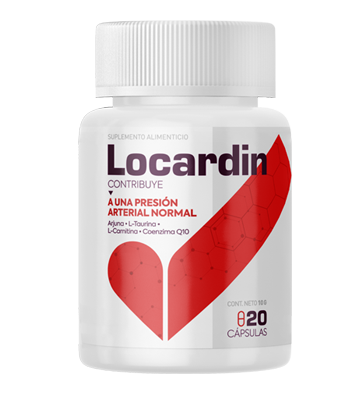

¿Cómo tratar la hipertensión correctamente?
La hipertensión arterial está muy extendida en todo el mundo. Según las estadísticas de la Organización Mundial de la Salud, el 40% de la población mundial la padece. La enfermedad es la primera causa de muerte en todo el mundo, pero muchas personas la tratan a la ligera. No más del 5% del número total de pacientes reciben un tratamiento efectivo.
El tema de la lucha contra esta enfermedad es más relevante hoy que nunca. Los médicos hablan de la hipertensión como una epidemia mortal. Cada año el número de pacientes crece, y se asocia con el estilo de vida moderno: estrés constante, mala nutrición, estilo de vida sedentario, trastornos del sueño.
¿Qué es esta enfermedad y cómo combatirla? Hablamos de ello con Gerardo Ruíz, cardiólogo líder en el Instituto de Salud Cardiovascular.
Redacción: ¿Quién es más propenso a desarrollar hipertensión, el hombre o la mujer?
En nuestro país, el 48% de los hombres y el 40% de las mujeres sufren de hipertensión. Resulta que los hombres son más propensos a esta enfermedad. Lo triste es que sólo el 30% de los pacientes luchan contra la hipertensión. La insidiosa enfermedad puede desarrollarse de manera asintomática. Incluso un síntoma como un dolor de cabeza, no siempre se observan en los pacientes con hipertensión. Por el contrario: muchos pacientes con hipertensión afirman sentirse alegres y enérgicos cuando la presión arterial aumenta
Redacción: ¿Qué etapas existen de la hipertensión?
Hay tres etapas de la hipertensión. I - cuando sólo hay factores de riesgo, es decir,la presión es superior a 130/80. Etapa II – la presiónes de 140/90 y superior, fectando los siguientes órganos:el cerebro, el corazón, los riñones. La tercera etapa de la hipertensión conduce a problemas cardiovasculares graves hasta ataques cardíacos y accidentes cerebrovasculares. Desafortunadamente, la hipertensión en su etapa III es a menudo la causa de la muerte
Redacción: ¿Qué hay sobre el tratamiento? ¿Qué medicamentos existen y qué tan eficaces son?
La gama de medicamentos hipotensores hoy en día es enorme. Y la mayoría de los médicos prescriben esos medicamentos que deben tomarse de forma permanente, es decir, de por vida. El problema es que esos compuestos no tratan la hipertensión, sólo alivian temporalmente los síntomas. Además, tarde o temprano aparece una adicción, y el paciente se ve obligado a cambiar un producto por otro, luego a otro y así.
El segundo inconveniente es que una vez que te has "metido" en los medicamentos para reducir la presión, ya no puedes vivir sin ellos. De hecho, la persona se convierte en drogadicta: recibe una dosis de la droga, la presión disminuye, y tan pronto como el medicamento deja de hacer efecto, la presión aumenta de nuevo, y a menudo incluso más alto que antes.
Este círculo vicioso es muy beneficioso para las compañías farmacéuticas, pero ese beneficio cuesta la vida de decenas de millones de personas cada año. Si nos fijamos en la instrucción de uno de los remedios más populares, entre los efectos secundarios se pueden encontrar los siguientes:
Efectos secundarios del sistema nervioso:
- a menudo mareos, debilidad
- a menudo dolor de cabeza, depresión
- con poca frecuencia: insomnio, somnolencia, aumento de la excitabilidad
- rara vez - confusión, insomnio
Respecto al sistema cardiovascular:
- a menudo desmayos, dolor en el pecho
- alteraciones del ritmo cardíaco (taquicardia, fibrilación auricular)
- Con poca frecuencia - infarto de miocardio o accidente cerebrovascular.
Respecto al sistema respiratorio:
- a menudo broncoespasmos
- raramente infiltraciones en los pulmones
Respecto al sistema digestivo:
- muy a menudo náuseas
- a menudo diarrea, dolor abdominal, flatulencia
- Con poca frecuencia hepatitis, necrosis hepática.
Respecto al sistema circulatorio:
- Reducción del nivel de hemoglobina y plaquetas
- alteración en la producción de células sanguíneas
- enfermedades autoinmunes
¡Y esta no es toda la lista!
Redacción: ¿Hay algún tratamiento eficaz? ¿Es posible deshacerse de la hipertensión para siempre?
Sí, existe un compuesto de este tipo, y apareció recientemente. El desarrollo se llevó a cabo con el apoyo de nuestro instituto, el producto se llamó .
Redacción: ¿Cómo funciona el ?
Antes de hablar del principio activo del , debemos entender las causas de la hipertensión, estas son en primer lugar: la aterosclerosis y la contracción patológica de los vasos sanguíneos. Por lo tanto, para curar la hipertensión, es necesario limpiar los vasos sanguíneos del colesterol y devolverles su elasticidad. Este principio es la base del .
Los componentes vegetales del producto literalmente disuelven las placas de colesterol, adelgazan la sangre, eliminando los coágulos sanguíneos. Además, el regula la frecuencia cardíaca, alivia la taquicardia y la arritmia.
Según los estudios clínicos, sólo un tratamiento de este producto ayudó a deshacerse permanentemente de la hipertensión en 98% de los pacientes.
Redacción: ¿Dónde se puede comprar el ?
Lo podemos ver en las droguerías rara vez, ya que para ellos no es rentable. Necesitan ventas constantes, no una población sana. Por lo tanto, nuestro instituto ha creado un sitio web especial donde se puede comprar en línea a precio de fábrica sin comisiones de los revendedores.
Redacción: Gerardo, gracias por esta entrevista tan informativa. ¿Qué podría decirles a nuestros lectores para cerrar?
Cuídense, presten atención a las señales de su cuerpo y escojan los productos más adecuados y que realmente traten en lugar de cubrir aliviando solo los síntomas

RedacciónGerardo compartió el enlace de la página web del , donde ahora está disponible el producto a un precio bajísimo. El enlace está abajo.


Más sobre este tema
¿Tienes riesgo de enfermedad cardíaca?

¿Tienes riesgo de enfermedad cardíaca?
No hay una sola causa para una sola enfermedad cardíaca, pero hay factores de riesgo que aumentan sus posibilidades de desarrollarla
Blood pressure and your heart
Presión arterial y tu corazón
Aprende sobre la presión arterial y cómo puede afectar la salud del corazón